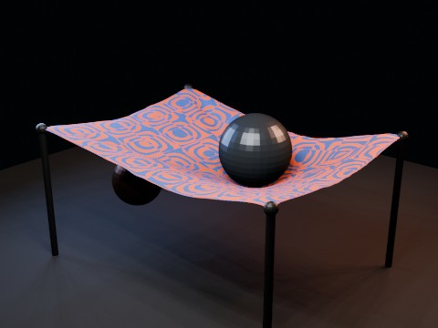

Cloth Hammock Collision EEVEE
cloth-hammock-collision-eevee
A CPU-heavy cloth simulation test: a four-corner-pinned hammock cloth with self collision, wind/turbulence and two animated sphere colliders. Physics is baked into shape keys before parallel EEVEE rendering.
source e2f23a87a9
preview · validation · source · result · cloth-hammock-collision-eevee.blend · Actions #32